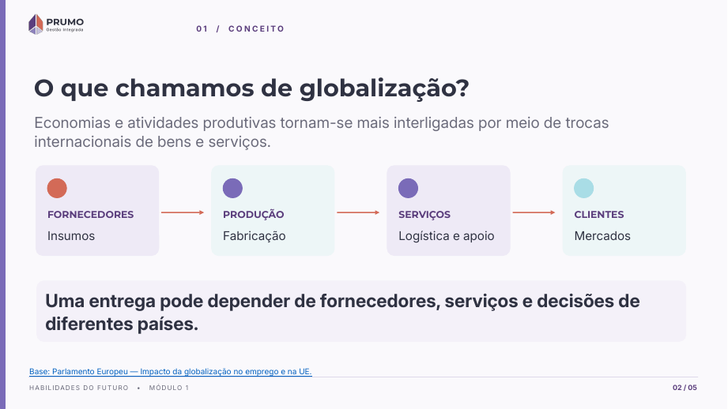
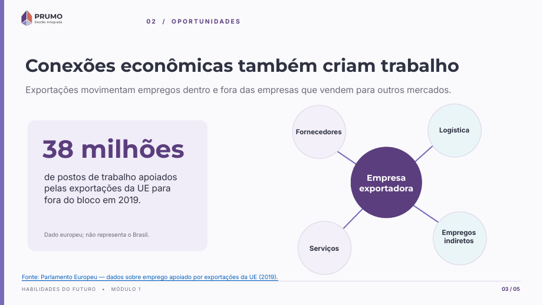
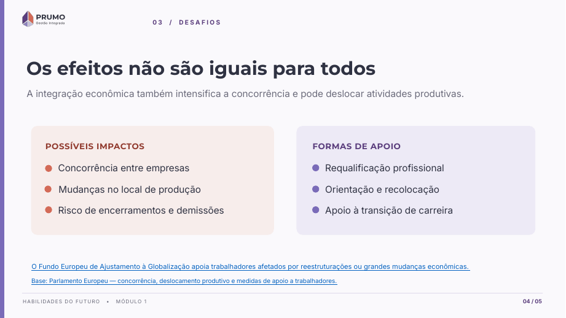

Slide 1 de 5 · Abertura
Ler conteúdo do slide
Globalização
Conexões que transformam o trabalho
Como decisões tomadas em diferentes lugares podem transformar uma atividade profissional?
Aula 1.3 · Apresentação
A síntese da aula 1.4 está no último slide.
Baixar apresentação original (PPTX)
Conexões que transformam o trabalho
Como decisões tomadas em diferentes lugares podem transformar uma atividade profissional?

Economias e atividades produtivas tornam-se mais interligadas por meio de trocas internacionais de bens e serviços.
Uma entrega pode depender de fornecedores, serviços e decisões de diferentes países.
Base no Parlamento Europeu — Impacto da globalização no emprego e na UE.

Exportações movimentam empregos dentro e fora das empresas que vendem para outros mercados.
38 milhões de postos de trabalho apoiados pelas exportações da UE para fora do bloco em 2019.
Dado europeu; não representa o Brasil.
O diagrama conecta uma empresa exportadora a fornecedores, logística, serviços e empregos indiretos.
Fonte: Parlamento Europeu — dados sobre emprego apoiado por exportações da UE (2019).

A integração econômica também intensifica a concorrência e pode deslocar atividades produtivas.
Possíveis impactos
Formas de apoio
O Fundo Europeu de Ajustamento à Globalização apoia trabalhadores afetados por reestruturações ou grandes mudanças econômicas.
Base no Parlamento Europeu — concorrência, deslocamento produtivo e medidas de apoio a trabalhadores.
Quatro competências que exploraremos ao longo do curso.
Para pensar
Um cliente muda os requisitos de uma entrega que envolve pessoas ou serviços de diferentes países. O que você precisa esclarecer antes de começar?
Síntese didática alinhada à ementa do curso; não é uma classificação do Parlamento Europeu.